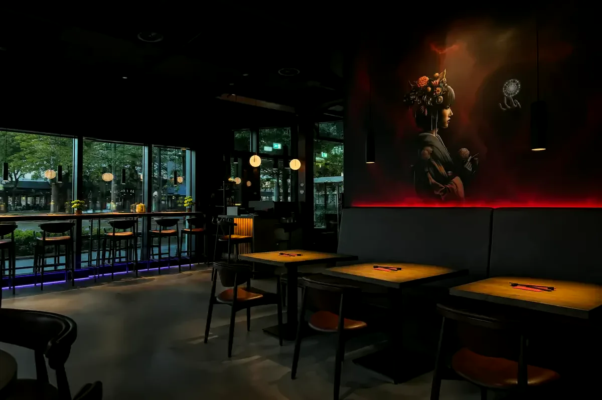
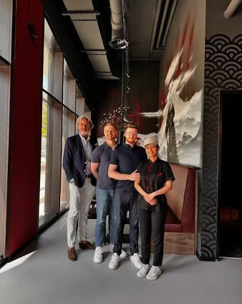
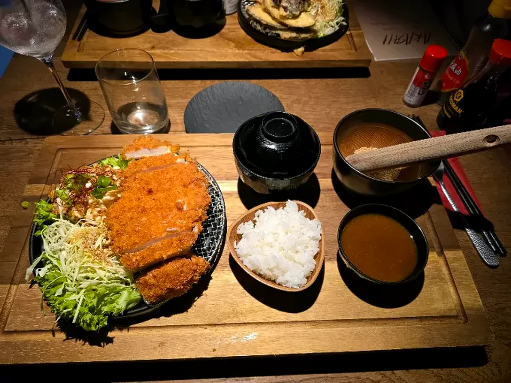
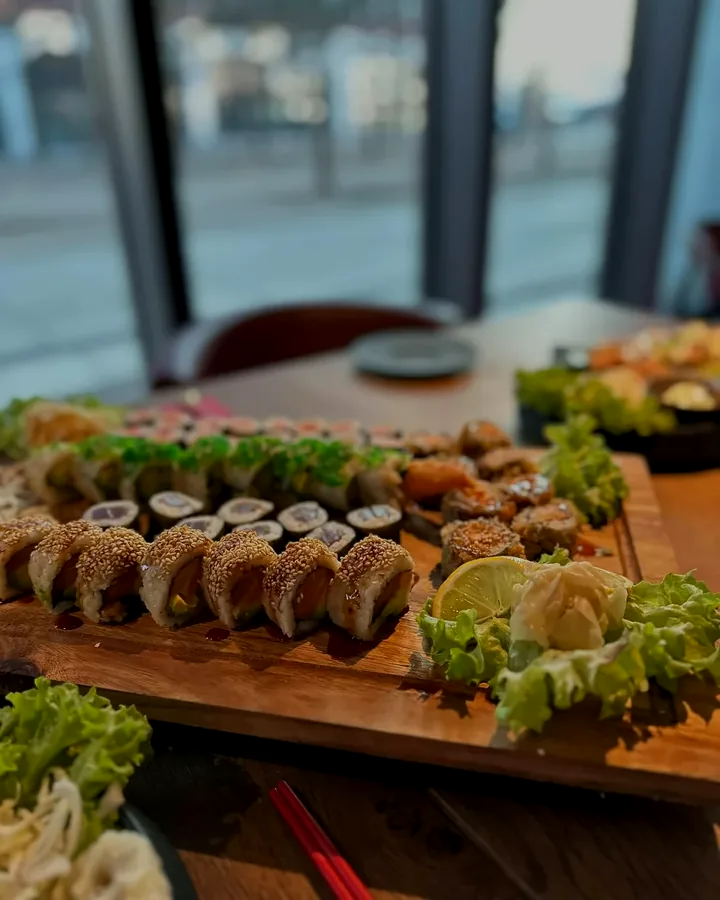
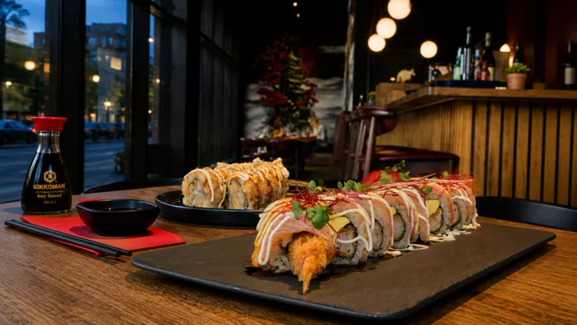
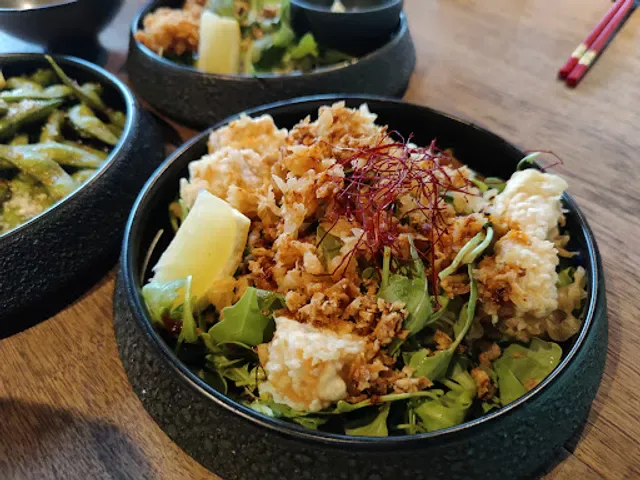

Akashi
Japanese Restaurant & Izakaya am Ludwig-Franzius-Platz. Sushi, Ramen und kleine Teller für die Mitte.


Über Akashi
Japanese Restaurant & Izakaya Bremen
Angefangen hat alles mit einem kleinen Streetfood-Restaurant in Bremen, dem Doki Doki. Aus der Leidenschaft für die japanische Küche ist das Akashi geworden, und in den letzten Jahren eine der besten Adressen für Sushi in der Stadt.
Unser Ziel sind authentische japanische Gerichte. Zum Beispiel das Rosu Katsukaré mit Duroc-Schweineschnitzel und japanischem Curry oder die Softshell-Crab Roll mit Tobiko und Chilimayonnaise. Dazu Sushi und Sashimi, Rolls zum Teilen, Ramen, Tonkatsu und die kleinen Teller einer Izakaya.
Abends ist es bei uns eher dunkel: rotes Licht an den Wänden, lange Holztische, vorne die Fensterbar mit Blick auf die Überseestadt. Du kannst bei uns essen, abholen oder dir liefern lassen. Komm vorbei und erleb das Akashi am Ludwig-Franzius-Platz.
Bestellen, teilen, nachbestellen
- Vor Ort mittags und abends, Gruppen ab neun Personen am besten telefonisch
- Abholen direkt bei uns am Ludwig-Franzius-Platz
- Lieferung kontaktlos nach Hause
Öffnungszeiten
| Montag | 12:00–14:30, 17:00–21:00 |
|---|---|
| Dienstag | 12:00–14:30, 17:00–21:00 |
| Mittwoch | 12:00–14:30, 17:00–21:00 |
| Donnerstag | 12:00–14:30, 17:00–21:00 |
| Freitag | 12:00–14:30, 17:00–21:30 |
| Samstag | 17:00–21:30 |
| Sonntag | Ruhetag |
So findest du uns
Ludwig-Franzius-Platz 1328217 Bremen, Überseestadt
0421 43093028
info@akashi-bremen.de
Überseestadt, Bremen Direkt am Ludwig-Franzius-Platz
Lädt Google Maps. Dabei erhält Google deine IP-Adresse, mehr in der Datenschutzerklärung.
Von Edamame bis Tonkatsu




-
★★★★★
Arigato heißt Danke auf Japanisch – und genau das möchte ich nach diesem Abend dem Team Akashi sagen!
Constantin F.Mai 2026 · bei Google
-
★★★★★
Wow, ich hab echt noch nie so leckeres Sushi gegessen! Alles so frisch, mega lecker und total schön angerichtet. Der Service war unnormal freundlich und aufmerksam man fühlt sich einfach wohl.
Dilay K.November 2025 · bei Google
-
★★★★★
Wir waren am 14.07.2026 anlässlich unseres Hochzeitstags hier, um ein neues Restaurant auszuprobieren. Unsere Erwartungen wurden bei Weitem übertroffen.
Holger L.Juli 2026 · bei Google
-
★★★★★
Wundervolles Ambiente, toller Gastgeber, super leckeres Essen und gute Beratung. Für uns wurde eine Auswahl an Vorspeisen und Sushi zusammengestellt, alle waren zufrieden und die Menge perfekt abgestimmt.
Ali R.Dezember 2025 · bei Google
-
★★★★★
[…] Das Sushi ist wirklich eine 10/10 frisch und lecker! Die Ramen sind einfach wie eine warme Umarmung und eine wahrliche Geschmacksexplosion! […] Wir kommen gerne wieder zu Besuch!
Katharina N.Juli 2025 · bei Google
-
★★★★★
[…] Das Personal hat uns sehr gut beraten! Und die Drinks waren auch spitze. Es ist auf jeden Fall empfehlenswert!!!
Margarita W.August 2025 · bei Google
Dein Tisch im Akashi
Sag uns, wann du kommen möchtest und mit wie vielen Leuten. Wir prüfen die Anfrage und bestätigen dir den Tisch per E-Mail oder Telefon.
- Telefon
- 0421 43093028
- info@akashi-bremen.de
- Gruppen ab 9 Personen
- Ruf uns am besten direkt an, dann planen wir den Abend gemeinsam.
Deine Anfrage ist angekommen
Wir melden uns mit der Bestätigung per E-Mail oder Telefon.
Etwas ändern? Ruf uns an unter 0421 43093028.